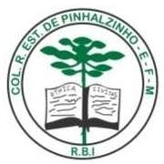

jornal das escolas
NOTÍCIAS DO PINHALZINHO
Eleita umas das melhores escolas do municipio, o colégio rural Estadual de Pinhalzinho, situado na cidade de rio bonito do iguaçu, Paraná(local onde ouve um tornado), segue com melhoras no local, como melhoras no laboratório e nas aulas dos alunos.
esse colégio, segue comuma das melhores notas no IDEB, e prova paraná. Um local onde os alunos tem muito aprendizado e ensino de qualidade.
